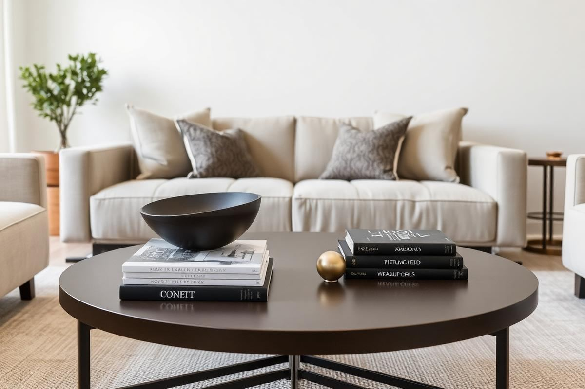

How to Style a Coffee Table: A Stylist's Formula

A coffee table is the surface you look at most and think about least. It sits at the centre of the seating group, at eye level when you are sitting down, and it collects everything: remotes, mugs, post, keys. Styling it well is not about covering it in objects. It is about giving the surface a structure that looks composed when it is tidy and recovers in ten seconds when it is not.
Start with the rule of three
Divide the tabletop into three zones and give each one a job. The first zone holds height — a vase, a candlestick, or a small sculptural object. The second holds a horizontal element, almost always a stack of books or a flat tray. The third stays either empty or holds one small, low object such as a bowl or a coaster set. Three zones read as intentional; four or more read as clutter, and two look unfinished.
This is genuinely the whole formula. Everything else in this guide is refinement on top of it, and if you only take one idea away, take this one.
Vary the heights deliberately
Objects at the same height read as a row rather than an arrangement. I aim for a tall element around 10 to 14 inches, a mid element around 5 to 7 inches, and a low element under 3 inches. On a standard 18-inch-high coffee table that gives you a silhouette that steps down naturally and never blocks the sightline between people sitting opposite each other.
- Tall: a stem vase, taper candlestick, or narrow sculptural piece.
- Mid: a stack of two or three hardbacks, or a lidded box.
- Low: a shallow bowl, a set of coasters, or a small tray of matches.
- Nothing above 14 inches unless the table sits against a wall rather than between seats.
Use a tray as an anchor
A tray is the most useful object you can put on a coffee table. It corrals small items so they read as one shape instead of six, it gives you a clean edge to compose against, and it lets you clear the whole arrangement in one movement when you need the surface for dinner. Choose one that covers roughly a third of the tabletop — on a 48-inch table that is something around 16 to 18 inches across.
Material matters less than contrast. A wooden tray on a marble or glass top adds warmth; a lacquered or metal tray on a timber top adds crispness. Matching tray to table finish is the one combination that reliably falls flat.

Books that earn their place
Stack two or three books maximum, largest at the bottom, spines facing outward toward the main seat. Books do two jobs: they add a platform for a smaller object, and they say something about the people who live there. Choose subjects you would actually open — architecture, gardens, photography, a monograph on something you love — rather than buying by cover colour. Visitors pick books up, and a stack chosen purely for its spine tone is immediately obvious.
If your books are all paperbacks or mismatched, use a lidded box of a similar footprint instead. It gives you the same platform effect and hides the remotes.
Add one living thing
Every arrangement needs one organic element to stop it looking staged. A few stems of eucalyptus, a small trailing plant, a bowl of lemons, or even a single branch cut from the garden will do it. Keep the arrangement low and loose — tight florist domes look formal and block sightlines. Three to five stems in a narrow-necked vase is the easiest version and takes under a minute to refresh.
Leave room to actually live
Aim to leave at least 40 to 50 per cent of the surface clear. That is the space for mugs, laptops, a board game, or feet at the end of a long day. A table styled so densely that a cup of tea has nowhere to land is a table that will be dismantled within a week, and it always shows in photographs — objects get pushed to the edges and the composition collapses.
Practically, that means placing your groupings toward the back half of the table if the sofa faces it directly, keeping the front strip clear for daily use.
Round, square, and oval tables
- Round: use one central grouping in a triangle formation rather than three separate zones. Round tables have no long axis to compose along.
- Square: place a square or round tray slightly off-centre and build height at one corner to break the symmetry.
- Rectangular: three zones spread along the long axis, tall element at one end rather than the middle.
- Oval or organic: follow the curve with two groupings and leave the widest point clear.
Seasonal swaps that take five minutes
Keep the structure and change the contents. In spring, swap the candle for a small bowl of bulbs. In summer, use a glass vase with garden stems and take the tray away entirely for a lighter surface. In autumn, add a textured object such as a small ceramic in a warm glaze. In winter, bring in a candle with a proper scent and a heavier throw within reach. The bones never change, which is why this takes minutes rather than an afternoon.
Style the table, then sit down and look at it from the sofa. If anything blocks your view of the person opposite, it is too tall. That single check catches most mistakes before they become habits.
Key takeaways
- Use three groupings at three different heights.
- Anchor small items with a tray about a third of the table's length.
- Add one organic element to stop the arrangement looking staged.
- Leave at least 40 per cent of the surface clear for daily life.
- Check the composition from the sofa, not from the doorway.
Frequently asked questions
How many items should be on a coffee table?
Three groupings is the reliable maximum. Within those, five to seven individual objects works; beyond that the surface reads as cluttered.
What size tray should I use on a coffee table?
Roughly a third of the tabletop's length. On a 48-inch table, a 16 to 18 inch tray sits comfortably without dominating.
Do I need books on a coffee table?
No, but a flat stack is the easiest way to add a platform and a horizontal element. A lidded box does the same job and hides remotes.
How tall should a coffee table centrepiece be?
Under 14 inches, so it never blocks the sightline between people seated on opposite sides of the table.
How do I keep a styled coffee table tidy day to day?
Keep 40 to 50 per cent of the surface clear and use a tray, so everything can be reset in one movement.

Sophia Bennett is a certified interior stylist and the senior editor at Styleire. She has spent more than eight years helping homeowners and renters create warm, functional interiors, with hands-on experience across small city apartments and family homes. Her work has been informed by close collaboration with independent designers, craftspeople, and product testers.
View full profile →Related reading

Living Room Rug Size Guide (With Real Room Examples)
A too-small rug is the most common decorating mistake. Here is how to size a rug for any living room layout.

How to Arrange Throw Pillows on a Sofa Without Overdoing It
How to Arrange Throw Pillows on a Sofa Without Overdoing It — a clear, editor-tested guide covering the essentials without the filler.

Living Room TV Wall Ideas That Look Designed, Not Techy
A television does not have to dominate a room. Here are the mounting heights, wall treatments, and styling tricks I use to make a TV wall look like part of the design.